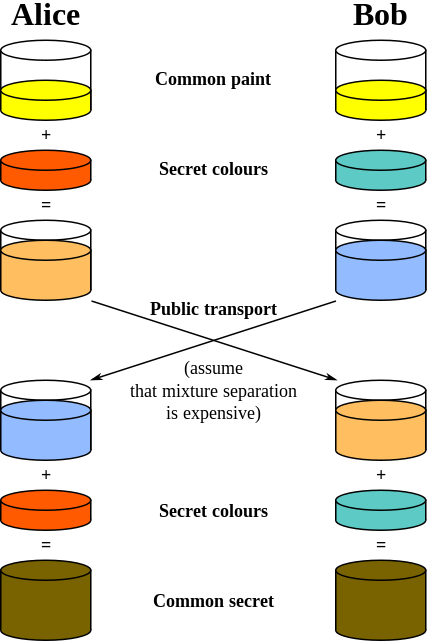

This website will allow you to learn about and use a Caesar cipher and the Diffie-Hellman key generation method.
The Ceasar cipher can be used to encrypt and decrypt messages which have been shifted up to 25 times.

The Diffie-Hellman key generator allows you to input two prime numbers, choose two numbers and calculate a
unique key used for end-to-end encryption.
